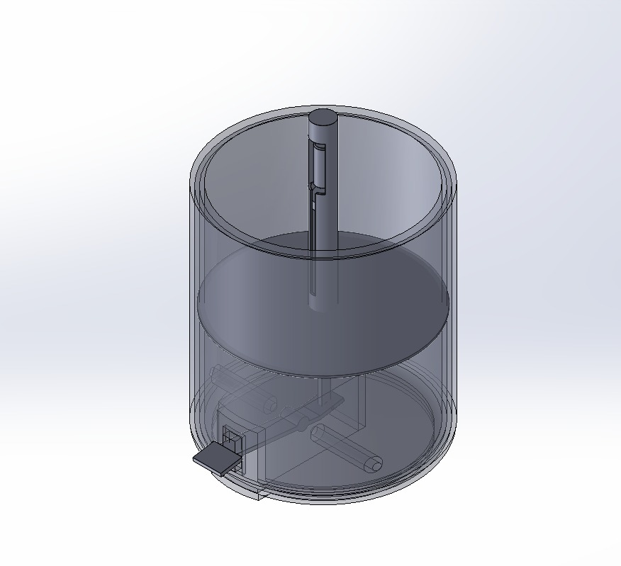

×
IMechE CADathon 2026 — 2nd Place, Sustainability Category
SolidWorks · Mechanical Design · Design Sprint · SDG 11
8-Hour Competitive Design Sprint · 2nd Place, Sustainability Category

The Brief
The IMechE CADathon is an 8-hour competitive design sprint where teams receive a brief on the day and must design,
model, and present a complete engineering solution within the window. Our 2026 brief centred on
SDG 11 — Sustainable Cities and Communities. No prior preparation, no pre-built models.
Everything from concept to CAD to presentation in eight hours.
The Problem We Chose to Solve
Aluminium cans are one of the most recyclable materials on earth — yet at high-footfall events like festivals,
sports venues, and public spaces, recycling rates are consistently poor. The standard explanation is apathy.
We disagreed with that framing.
Our analysis was simpler: passive infrastructure makes recycling the inconvenient choice. Bins are
identical. There's no feedback, no engagement, no reason to prefer the recycling option over the bin nearest to you.
If recycling were the fun choice, behaviour would follow. That became the brief we gave ourselves.
CrushIt — The Concept
CrushIt is a pedal-powered, gamified aluminium can crusher designed for deployment at high-footfall
public events. The user steps on a foot pedal, the can crushes, a mechanical counter increments. Two units sit
side-by-side, each representing a team — the demo concept being a Messi vs Ronaldo rivalry. Live crush counts are
displayed on each side. Recycling becomes a competitive game.
The judging panel specifically cited the gamified dual-sided engagement mechanic as the key differentiator in our score.
That was gratifying — it was the first idea I put on paper when the brief dropped.
Mechanical Design
The entire machine is fully passive — zero electricity. Everything is mechanical:
- Foot-pedal toggle linkage — delivers crushing force through a mechanical advantage linkage, returning to the ready position under spring tension.
- Upper spike platform — pre-punctures the can at the top before the main crush begins, safely releasing pressurised carbonation before the can deforms. A sealed, suddenly-crushed can can behave unpredictably; this removes that risk.
- Grid lower platform with liquid drainage tray — open-grid geometry lets residual liquid drain passively, keeping the mechanism and floor clean.
- Inclined exit floor — crushed cans roll to one side automatically, clearing the crushing zone for the next can without user intervention.
- Mechanical safety lid interlock — the crushing sequence can only initiate when the lid is correctly closed, preventing hand injuries. Fully mechanical — no electronics, no software failure modes.
My Contributions
I originated the CrushIt concept and identified the framing problem — that poor recycling at events is an infrastructure
and engagement problem, not an apathy problem. The gamification mechanic (dual-sided competitive engagement, live counter)
was my core design contribution, and the one the judges called out specifically.
Beyond concept, I led all SolidWorks CAD modelling across the eight hours and built the final presentation deck within
the same window. In a time-constrained format, the ability to CAD and communicate simultaneously is where competitions
are won or lost.
Reflection
Second place in a sustainability design sprint in eight hours is a decent result. But what I took from it was less
about the placement and more about design process under genuine time pressure.
The instinct under time pressure is to jump to solutions — to start modelling before you've understood the problem.
Teams that do that tend to produce technically competent designs that don't land with judges, because the problem
framing is soft. Spending the first thirty minutes challenging the brief's implicit assumptions (why is recycling low?
is it actually apathy?) produced a sharper concept than we'd have gotten by immediately going to CAD.
The all-mechanical, zero-electricity constraint was a deliberate choice, not a limitation. It meant the design had no
power dependency, no software failure modes, and was immediately manufacturable from standard materials. Simplicity
in mechanical design is underrated.
Design Sprint Presentation